[arXiv'25] MTGRBoost: Boosting Large-scale Generative Recommendation Models in Meituan 论文阅读
#0. 摘要
推荐系统对用户体验和公司营收至关重要, 而生成式推荐模型近期被证明能够产生高质量的推荐结果. 然而, 现有系统在工业场景中训练生成式推荐模型时, 普遍面临功能支持不足与实现效率低下的限制. 为此, 我们推出了 MTGRBoost – 个高效且可扩展的生成式推荐模型训练系统. 具体而言, 为应对稀疏嵌入条目的实时插入与删除需求, MTGRBoost 采用动态哈希表替代静态表; 为提升训练效率, 系统通过动态序列均衡技术解决 GPU 间计算负载不均的问题, 并采用嵌入 ID 去重与自动表合并机制以加速嵌入查找过程. MTGRBoost 还集成了多项实现优化策略, 包括断点续训、混合精度训练、梯度累积及算子融合. 大量实验表明, MTGRBoost 在超过 100 个 GPU 上运行时, 训练吞吐量提升 1.6× 至 2.4×, 同时展现出良好的可扩展性. MTGRBoost 已在美团多个业务场景中部署应用, 目前每日处理请求量达数亿级别.
#1. 引言
作为生活服务领域的领先电商平台, 美团业务覆盖外卖、出行、健康等多个垂直领域. 2024 年, 我们服务了超过 7.7 亿交易用户, 日峰值订单处理量突破 9800 万单. 如图 1 所示, 推荐模型通过高效筛选信息并为用户提供个性化服务, 已成为我们业务的核心引擎. 高质量的推荐对于维持高用户留存率、保障商家满意度以及提升公司营收具有至关重要的作用. 目前, 我们的推荐模型每日需整合数 TB 级的用户行为数据与商品元数据进行训练, 并为各类服务生成数十亿次预测结果.
随着生成式语言模型的进步, 生成式推荐模型 (GRMs) 已受到学术界与工业界的广泛关注. 具体而言, GRM 包含两个核心模块: 一是稀疏嵌入表, 用于将离散分类特征映射为连续嵌入向量; 二是基于 Transformer 的稠密模型, 通过建模用户行为序列来预测其下一动作. 相比之下, 早期的深度推荐模型 (DRMs) 主要依赖多层感知机来捕捉用户与单个行为间的交互关系. 如图 2 所示, GRM 凭借自注意力机制对用户完整行为序列的建模能力, 其预测精度显著优于 DRM. 然而, 由于注意力机制的计算复杂度随序列长度呈二次方增长, 而 DRM 仅呈线性增长, GRM 面临更高的计算负担. 因此, 为兼顾 GRM 的高精度优势并适应训练数据生成的高速需求, 美团亟需构建一个高效可扩展的 GRM 训练系统.
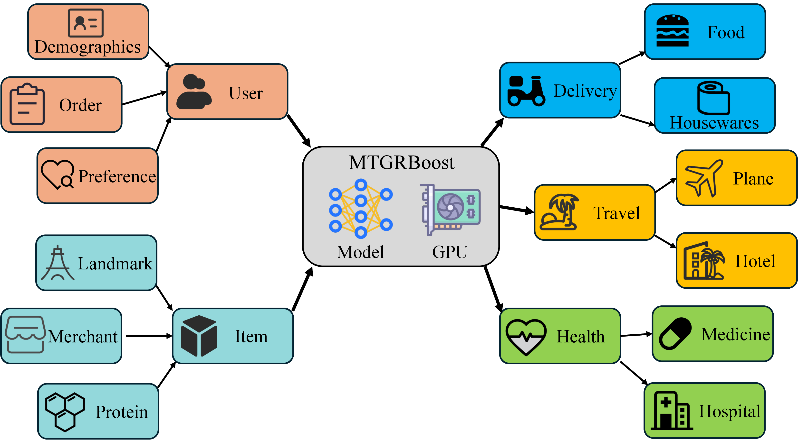
图 1: 推荐模型在美团的应用场景.
针对基于 Transformer 的稠密模型执行优化已开展广泛研究. 例如 FlashAttention通过减少中间结果物化量、降低 GPU 全局内存访问次数来加速注意力计算. Megatron与 DeepSpeed等分布式训练框架采用融合数据并行、模型并行与流水线并行的混合并行训练策略, 有效提升了系统扩展性. 这些进展推动工业推荐系统从 TensorFlow向 PyTorch迁移. 其中 TorchRec作为当前最先进的 PyTorch 推荐模型训练系统, 我们基于其架构集成高效注意力计算内核, 最终构建了 MTGRBoost 系统.
然而, 我们发现 TorchRec 在处理生成式推荐模型的稀疏嵌入表时存在两个根本性的效率缺陷.
- TorchRec 的静态嵌入表无法处理动态嵌入条目与表容量扩展. 具体而言, 固定尺寸的静态表无法实时为新用户和新项目 (例如商家更新菜单) 分配额外嵌入向量. 虽然此时可采用某些默认嵌入向量, 但模型精度将因此下降. 静态表本质上缺乏动态扩展能力, 因此通常需要预先分配超出实际需求的容量以防止 ID 溢出, 这必然导致内存利用率低下.
- 在嵌入查找过程中, 由于序列中存在重复的特征 ID, TorchRec 可能多次提取相同的嵌入条目, 导致通信时间延长并浪费网络带宽. 此外, TorchRec 需要大量人工配置来合并嵌入表 – 这种常见且有效的操作本可加速训练过程. 这两大局限严重制约了生成式推荐模型的实际部署, 并损害了训练效率.

图 2: DRM 与 GRM 的 AUC (准确率指标, 数值越高越好) 及模型复杂度对比. 在实际推荐场景中, 即使 0.1%的准确率提升也至关重要.
为应对这些挑战, MTGRBoost 采用了基于哈希的动态嵌入表及两项关联优化技术, 即自动表合并与查重去重. 基于哈希的嵌入表通过解耦键 (即嵌入索引) 与值 (即嵌入向量) 的存储结构, 利用哈希函数将任意特征 ID 映射至嵌入索引, 从而消除了固定容量的限制. 我们通过维护两套值分配机制并仅倍增键存储空间的方式, 定制了容量扩展流程. 其核心洞见在于: 相较于静态表迁移高维嵌入向量所需的网络通信开销, 迁移键值所产生的通信成本显著降低. 此外, 我们采用两阶段 ID 去重操作, 在 ID 通信前后分别消除冗余 ID, 以避免设备间重复的嵌入传输. 同时设计了特征配置接口以实现自动表合并功能, 该设计能减少嵌入查找算子的数量, 从而提升处理效率.
除了稀疏嵌入外, MTGRBoost 还集成了一系列额外的优化技术, 以构建高效的生成式推荐模型训练系统. 我们观察到, 变长序列会导致 GPU 间出现显著的负载不均衡. 由于保留完整序列对模型精度至关重要, 我们无法像处理 LLMs 那样通过截断或填充序列来实现负载均衡. 为此, 我们提出了一种轻量级动态序列平衡技术, 通过动态调整各 GPU 的批次大小, 使所有 GPU 保持相近的工作负载. 此外, MTGRBoost 支持断点续训、混合精度训练、梯度累积及算子融合等优化. 具体而言, 该系统支持在不同 GPU 数量配置下保存和加载检查点; 对稠密模型、热嵌入和冷嵌入采用差异化精度以降低计算开销; 通过稀疏聚合实现高效的稀疏梯度累积; 并通过融合注意力模块中的多个计算核来加速前向计算过程.
我们基于美团一周内产生的 3 亿条真实用户序列对 MTGRBoost 及其设计方案进行评估. 可扩展性实验表明, 当使用更多 GPU 时, MTGRBoost 在训练吞吐量上实现了接近线性的加速效果. 与 TorchRec 相比, MTGRBoost 将训练时间缩短了 2.44×. 消融实验证实了所提设计的有效性: 动态序列平衡技术实现了近乎最优的负载均衡, 相比基线系统将吞吐量提升了 1.75×; 自动表合并与查重去重机制显著降低了网络通信开销, 使系统吞吐量获得 53%的提升.
总而言之, 我们做出了以下贡献.
- 我们推出 MTGRBoost, 这是一个在美团实际生产环境中高效且可扩展的生成式推荐模型训练系统.
- 我们观察到现有系统在处理生成式推荐模型的稀疏嵌入时效率低下. 为此, 我们提出了一系列技术, 包括动态表以适应特征变化、自动表合并以融合算子, 以及查重去重以避免重复通信.
- 我们构建了 MTGRBoost 作为一个完整且高效的生成式推荐模型训练系统, 其优化措施包括负载均衡、灵活检查点恢复、混合精度计算、梯度累积以及内核融合.
- 我们在生产环境的真实数据上进行了大量实验, 以评估 MTGRBoost 的性能. 结果表明, MTGRBoost 具备高效性与可扩展性, 且我们的设计方案能有效提升系统运行效率.
#2. 美团内部的 GRM
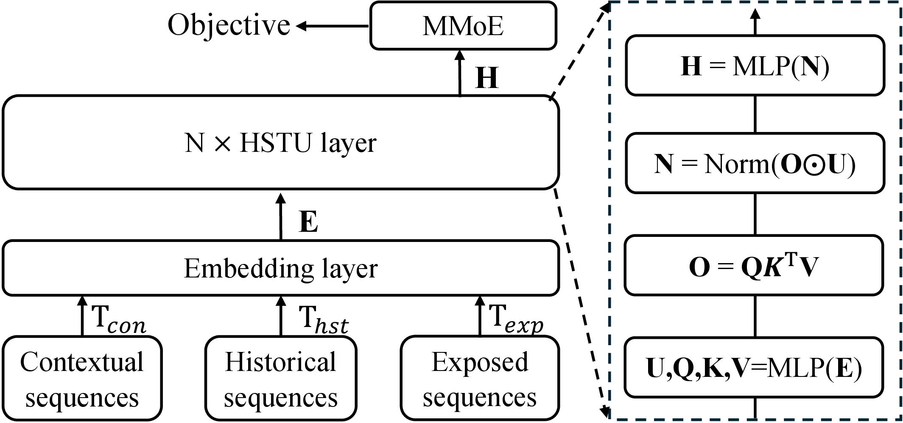
图 3: 美团生成式推荐模型 (GRM) 的架构图.
模型架构. 图 3 展示了美团生成式推荐模型 (GRM) 的架构, 该模型包含四个核心组件: 输入序列、嵌入层、分层序列转换单元 (HSTU) 层以及多门混合专家 (MMoE) 层. 具体而言, 输入序列 包含上下文序列 (即用户特征)、历史序列 (例如点击和购买行为) 以及曝光序列 (即实时行为). 由于深度模型无法直接处理离散类别数据, 嵌入层 用于将特征 ID 转换为连续的嵌入向量, 其中 和 分别表示特征数量和嵌入维度.
随后, 我们采用多层 HSTU (一种基于注意力机制的 Transformer 架构), 通过用户与物品的交互学习用户序列嵌入. 如图 3 所示, 每个 HSTU 层配备四个基于注意力的子模块, 分别用于用户特征提取、物品特征提取 以及特征交互. 其计算过程可表述如下:
其中 和 为 SiLU 激活函数. MMoE 将来自 HSTU 层的嵌入向量 导向多个专家模型. 每个专家模型均配备一个学习模型权重的门控网络. 最终, 我们聚合前 个专家模型的输出嵌入向量, 即:
我们采用交叉熵损失函数来优化点击率 ctr 和转化率 cvr.
与 GRM 和 DRM 不同, 我们的模型基于 GR 构建, 通过引入一种由 MMoE 增强的新型预测头进行改进. 该设计以 MMoE 替代了 GR 中的多层感知机 (MLP), MMoE 采用任务特定的门控网络动态平衡多个目标, 从而提升多任务场景下的准确性. 相较于 MLP 需要大量参数调优的方式, MMoE 通过选择性激活前 k 个专家输出, 有效降低了计算开销. 此外, 我们的 MTGRBoost 在批次构建上也与 DRM 有所区别. 如图 4 所示, DLRM 的成对批次包含冗余的用户计算 (例如 “用户 1” 的特征被处理两次). 相比之下, MTGRBoost 采用序列化方法, 将多次用户交互整合为单个样本, 确保每个用户特征仅计算一次. 值得注意的是, 用户特征包含的标记数量比物品特征高出数个数量级 (例如 10,000 vs 100), 这使得 MTGRBoost 能够显著加速训练并提升可扩展性.
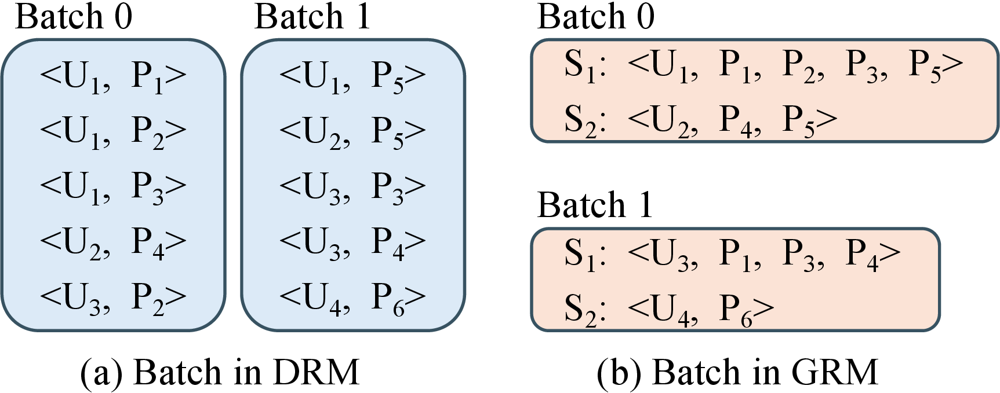
图 4: DRM 与 GRM 的批次结构示意图. “U” 代表用户, “P” 代表商品. DRM 与 GRM 分别采用配对式与序列式的批次构建方法.
#3. MTGRBoost 系统概述
MTGRBoost 支持生成式推荐模型在多设备间的分布式训练. 在并行策略上, 我们遵循 TorchRec 的设计框架, 采用混合并行方案: 稀疏模型采用模型并行, 稠密模型采用数据并行. 这种组合策略基于两点考量:
- 超大嵌入表无法被单一设备完整存储, 数据并行在此场景下不可行;
- 稠密模型参数量相对较小, 更适合采用数据并行.
MTGRBoost 采用端到端的同步训练方式, 有效保障了模型质量与预测精度.
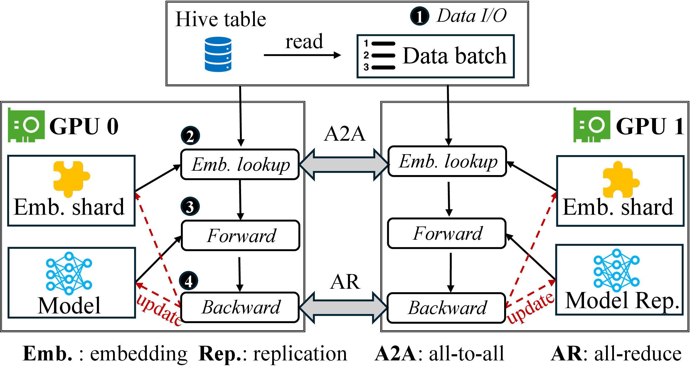
图 5: MTGRBoost 在生成式推荐模型训练中的工作流程.
工作流程. 我们提供如下详细说明.
- 数据输入/输出. 如图 5 (1) 所示, 训练数据以分区的 Hive 表形式存储在 HDFS 上, 采用列式存储格式以优化访问速度和存储效率. Hive 表中的每一列代表一个特征. 为最大化 I/O 吞吐量, Hive 表被划分为分布在多个设备上的较小分片, 各设备从分配的分片中并行读取数据. 此外, 我们预取多个后续批次, 并将其加载过程与当前批次的计算过程重叠, 从而掩盖 I/O 延迟.
- 嵌入查询. 如图 5 (2)所示, 嵌入查询过程采用 All-to-all 通信实现跨设备嵌入交换. 具体而言, 该过程包含两次数据交换: 首先, 设备通过 All-to-all 通信发送需查询的特征 ID, 并接收来自对等设备的对应 ID; 随后, 通过另一次 All-to-all 操作在设备间交换检索到的嵌入向量.
- 前向计算. MTGRBoost 中的稠密模型 (包括 HSTU 和 MMoE) 参数量远少于稀疏模型 (即嵌入表). 如图 5 (3)所示, 数据并行机制在前向传播过程中为每个设备准备一份稠密模型的副本. 通过设置相同的随机种子, 所有设备上的模型参数保持一致的初始化状态. MTGRBoost 将总序列批次划分为更小的微批次, 分发至不同设备后并行执行前向计算.
- 反向更新. 图 5 (4) 展示了 MTGRBoost 在混合并行架构中采用的异构参数更新机制. 稀疏嵌入表通过模型并行方式聚合分片梯度, 其中每个设备通过全对全通信更新本地存储的嵌入分片. 稠密参数 (如 HSTU) 在参数更新前采用全规约通信进行梯度同步.
流水线. 为进一步提升训练效率, 我们通过采用复制流、调度流与计算流的三流并行流水线技术实现最大化并行. 具体而言, 复制流负责将序列从 CPU 加载至 GPU, 调度流执行基于 ID 的查表操作, 计算流则处理前向计算与反向更新. 例如当计算流执行批次 的前向与反向传播时, 复制流可并行加载批次 以掩盖 I/O 延迟; 在完成批次 的反向更新后, 调度流会立即启动批次 的查表与通信操作.
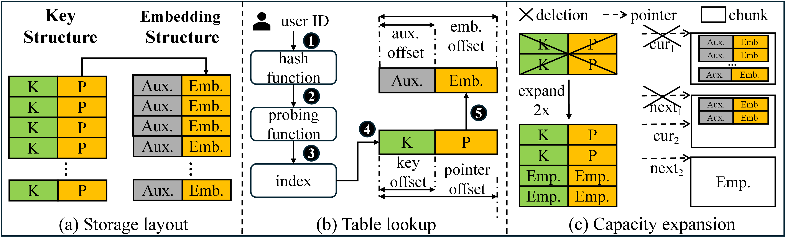
图 6: MTGRBoost 中的动态嵌入表. (a) 存储布局. 我们设计了一种解耦的键值存储架构, 其中键存储在键结构中, 值则存放在专用的嵌入结构中. (b) 表查找. 对于给定的 ID, 我们采用哈希和探测函数来确定其索引, 然后通过基于偏移量的机制获取嵌入的内存地址. (c) 容量扩展. 我们优先扩展键结构, 仅当当前内存块达到容量上限时, 才启动嵌入结构的扩展.
#4. 稀疏嵌入的高效处理
#4.1. 动态嵌入表
在美团的生产环境中, 推荐系统必须根据用户实时交互动态调整推荐内容. 然而, 由于 TorchRec 依赖固定容量的静态嵌入表, 无法处理动态 ID 问题. 静态表通常采用默认嵌入向量为超出容量的特征 ID 提供嵌入表示, 但这会导致模型精度下降. 此外, 静态表需要预先分配超额初始容量以应对可能的扩展需求, 从而导致内存利用率低下. 这些局限性促使 MTGRBoost 实现了动态嵌入表机制.
存储布局. MTGRBoost 采用解耦的哈希表架构, 将键与值的存储分离至独立结构中. 如图 6(a) 所示, 键结构维护一个轻量级映射表, 其中包含键及其对应的嵌入向量指针; 而嵌入结构则存储嵌入向量以及淘汰策略 (如最近最少使用和最少频率使用) 所需的辅助元数据 (例如计数器和时间戳). 这种双重结构设计实现了两个关键目标: (1) 通过仅复制紧凑的键结构而非庞大的嵌入数据, 实现动态容量扩展; (2) 将键存储在紧凑的内存布局中, 同时适应可能稀疏的键分布, 从而优化键扫描效率.
处理哈希函数与碰撞问题. MTGRBoost 选用 MurmurHash3作为哈希函数来确定嵌入数据的存储位置. 该算法以 4 字节为处理单元, 通过混合操作 (如常数乘法、位旋转、异或合并) 对输入 ID 进行处理, 以最大化熵值并确保单比特变化能产生雪崩效应. 这种多级混合机制通过迭代非线性变换生成均匀分布的哈希值.
哈希冲突发生在不同键值通过哈希函数映射到同一索引位置时. 通常采用链式寻址和开放寻址等技术进行处理. MTGRBoost 选择开放寻址法解决冲突, 因其相比链式寻址具有内存效率优势. 然而现有探测技术在高负载因子下容易产生聚集现象. 针对这一问题, 我们提出一种新颖的分组并行探测技术. 该方法首先通过按位或运算确保基础步长 S 为奇数, 从而保证探测过程中能够访问表中所有位置. 接着将步长与键值关联, 避免不同键值的探测序列重叠导致的聚集现象. 最后将步长乘以线程组编号, 使不同线程组能够探测表的不同区域. 该技术形式化表达如下:
其中 k 指代键值, M 表示哈希表大小, 𝗍𝗁𝗋𝖾𝖺𝖽𝗌 代表线程组数量, ∣ 表示按位或运算. 分组并行探测充分利用了 GPU 的高并行计算能力, 确保探测序列的均匀分布. 此外, 我们通过互质条件证明该分组并行探测技术能够遍历哈希表中的所有槽位, 具体证明过程详见附录 A.
- 定理 1
- 对于一个大小为 的哈希表和一个奇数探测步长, 当且仅当 为奇数时, 探测序列 能够覆盖所有 个不同的槽位. 形式化表述为:
哈希表查找. 在哈希函数和探查方法就位后, 我们现在可以高效实现动态表查找. 如图 6(b)所示, 首先计算给定用户 ID 的哈希值, 通过探查在哈希表中定位该 ID 对应的索引位置 (步骤 1-3). 随后结合内存中键结构的起始地址、索引值及指针偏移量, 即可确定该用户 ID 对应的嵌入指针 p (步骤 4), 其形式化定义如下:
其中 表示键结构的起始地址, 而. 最后, 我们利用该指针结合嵌入结构中的嵌入偏移量来提取嵌入向量 (步骤 5). 与静态表无法处理超出其大小的输入数据范围不同, 我们的动态表能够接受可变输入值. 因此, 动态表有效解决了静态表在处理动态 ID 时的局限性.
容量扩展. 当哈希表槽位占用率达到临界水平时 (通常负载因子>0.75), MTGRBoost 会启动哈希表扩容机制. 如图 6(c)所示, 容量遵循二次幂递增规律, 通过迭代翻倍直至满足系统需求. 迁移过程将原始键结构中的键与指针转移至扩容后的版本, 随后释放原有内存. 关键设计在于优先扩展键结构, 同时保持分块 (即嵌入结构) 容量不变, 从而通过避免大规模嵌入数据传输来优化扩展效率. MTGRBoost 通过维护两个分块 – 当前分块与预备分块 – 应对嵌入结构的扩展需求. 具体而言, 当当前分块的剩余容量不足以容纳新增嵌入向量时, 系统会将其暂存至预备分块. 与此同时, 已填充分块会被回收, 并分配新分块作为预备分块以维持双分块配置. 这种预分配机制确保扩展过程中新增嵌入向量能够获得即时存储空间.
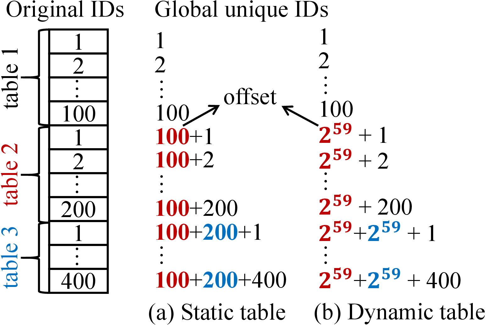
图 7: 静态表与哈希表中偏移量的示例.
#4.2. 嵌入表合并
工业推荐系统通常将多个独立的嵌入表合并为一个更大、更统一的表. 合并表具有两个关键优势. 首先, 合并后的嵌入表以连续内存块的形式存储, 避免了内存碎片问题. 其次, 合并表显著提升了查找效率, 因为多个表查找操作被融合为单一操作. 然而, 我们观察到 TorchRec 在表合并实现中存在关键局限. 合并过程要求开发者手动逐个配置每个嵌入表, 对于海量表而言, 这变得极为耗时费力.
自动化合并表. 为解决上述问题, 我们提出了一种自动化表格合并框架. 我们设计了一个统一的特征配置接口 FeatureConfig, 通过为每个特征定义参数 (如特征名称、嵌入维度和查找表) 来实现自动化合并. MTGRBoost 随后生成合并策略, 例如合并具有相同嵌入维度的表格. 为支持动态嵌入表合并, 我们设计了 HashTableCollection, 该组件利用特征配置生成哈希表集合, 并根据需要进行池化计算. 最后, MTGRBoost 通过序列 ID 检索嵌入向量, 跨表查找通过预定义的查找表进行管理. 开发者只需指定所需特征, MTGRBoost 即可自动注册特征并执行表格合并, 无需人工干预实现细节.
先前方案. 合并表可能导致不同表的 ID 空间出现数值重叠. 例如, 用户 ID 和物品 ID 在合并后的整个表中可能具有相同的 ID 值. 为解决此问题, 推荐系统通常采用行偏移机制. 如图 7 (a) 所示, 为每个嵌入表分配唯一的行偏移值 (例如表 2 的偏移量为 100), 该值通过累加前序所有嵌入表的行数计算得出. 随后将偏移量与原 ID 相加, 生成全局唯一 ID, 用于从合并表中检索对应的嵌入向量.
我们的解决方案. 动态表合并同样面临 ID 数值重叠的问题. 然而由于动态表的行数无法预先获取, 因此无法直接应用固定的行偏移量. 为解决这一问题, 我们为每个动态表分配最大可能的偏移量以防止 ID 溢出. 我们仍采用行偏移量计算全局唯一 ID, 但这些偏移量需根据特征表数量动态计算. 具体而言, 我们通过位运算将原始 ID 与特征表标识符结合生成全局唯一 ID. 首先计算编码特征表索引所需的比特数, 使用 64 位整数空间的高 位作为特征标识位. 通过将最高位设为 0 确保偏移量为正整数, 同时剩余 位用于计算哈希表的最大行数. 如图 7(b)所示, 我们使用 2 个标识位区分三个表 (因为), 同时利用剩余的 61 位 (64-1-2) 计算哈希表的最大行容量为 261. 因此, “表 2” 和 “表 3” 的偏移值分别配置为 259 和 260, 这是通过对最大行容量进行连续减半得出的. 正式地, 第 i 个特征表中 ID 的计算公式如下:
其中 ≪ 表示左移操作, ∣ 为按位或运算.
#4.3. 嵌入表查找加速
在工业推荐系统中, 嵌入表通常被划分为多个分片并分布在不同的设备上. 每次表查找都需要进行两次全对全集体通信: ID 通信和嵌入通信. ID 通信涉及交换待查询的特征 ID, 而嵌入通信则涉及交换查询到的嵌入向量. 然而, 序列批次中可能包含大量重复的特征 ID, 有限的带宽可能使 ID 通信和嵌入通信成为性能瓶颈. 此外, 重复的特征 ID 会导致对同一嵌入向量的冗余读取, 显著增加内存访问压力.
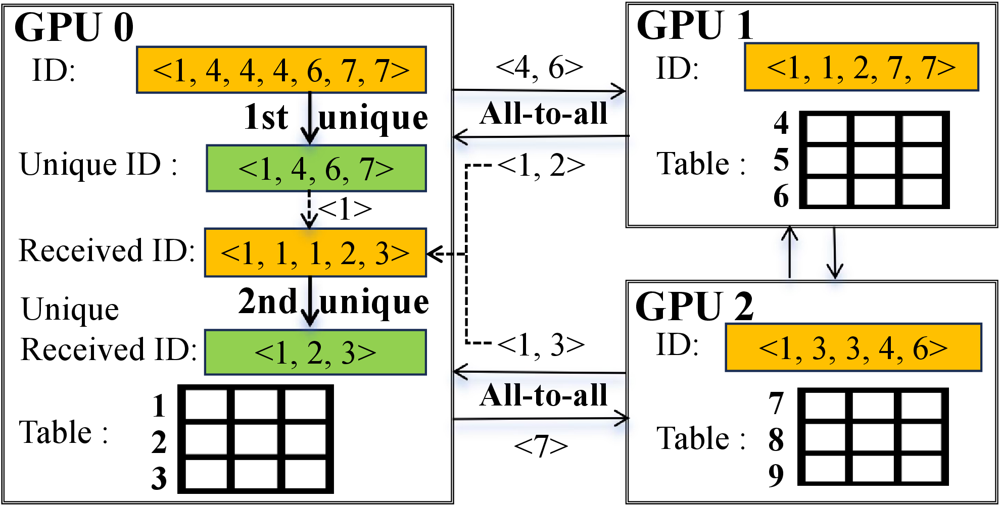
图 8: 两阶段 ID 去重运行示例. 我们仅可视化 GPU 0 上的 ID 去重过程, 并省略了嵌入通信环节.
两阶段 ID 去重. 为解决上述问题, 图 8 展示了一个两阶段 ID 去重流程, 旨在降低通信延迟与查找频率. 第一阶段从两个关键环节降低延迟: 特征 ID 通信与嵌入向量通信. 节点内的设备在交换特征 ID 前会先进行去重处理, 从而减少 ID 通信延迟. 更重要的是, 去重操作能显著缓解嵌入向量的通信延迟. 若 ID 存在冗余, 设备将传输多个重复的嵌入向量, 因为它们必须根据接收到的特征 ID 返回对应的嵌入向量. 尽管第一阶段已进行优化, 但由于分布式通信模式中固有的全对全 ID 交换机制, 重复 ID 仍会在设备间重新产生. 第二阶段的去重操作会消除这些新生成的重复项, 从而最大限度降低查表频率. 值得注意的是, 两阶段 ID 去重操作的主要目标是降低嵌入向量通信延迟, 因为 ID 通信本身影响较小, 且哈希表查找操作本身具有高效性.
#5. 额外优化措施
#5.1. 序列平衡
用户序列天然呈现长尾分布: 一小部分高度活跃的用户生成了异常长的序列, 而大多数用户产生的序列相对较短. 以往的深度推荐模型 (DRMs) 受限于架构约束, 需要对序列进行截断和填充以实现长度对齐. 相比之下, 生成式推荐模型 (GRMs) 保留了完整的用户序列, 从而实现了更高的准确性. 这一优势源于截断可能移除语义关键标记 (即序列中的某个项目), 即使这些标记被许多中间交互所分隔. 例如, 用户早期的手机购买历史可能影响后续的配件推荐, 尽管存在时间距离. 此外, 截断改变了序列依赖的基本语义.
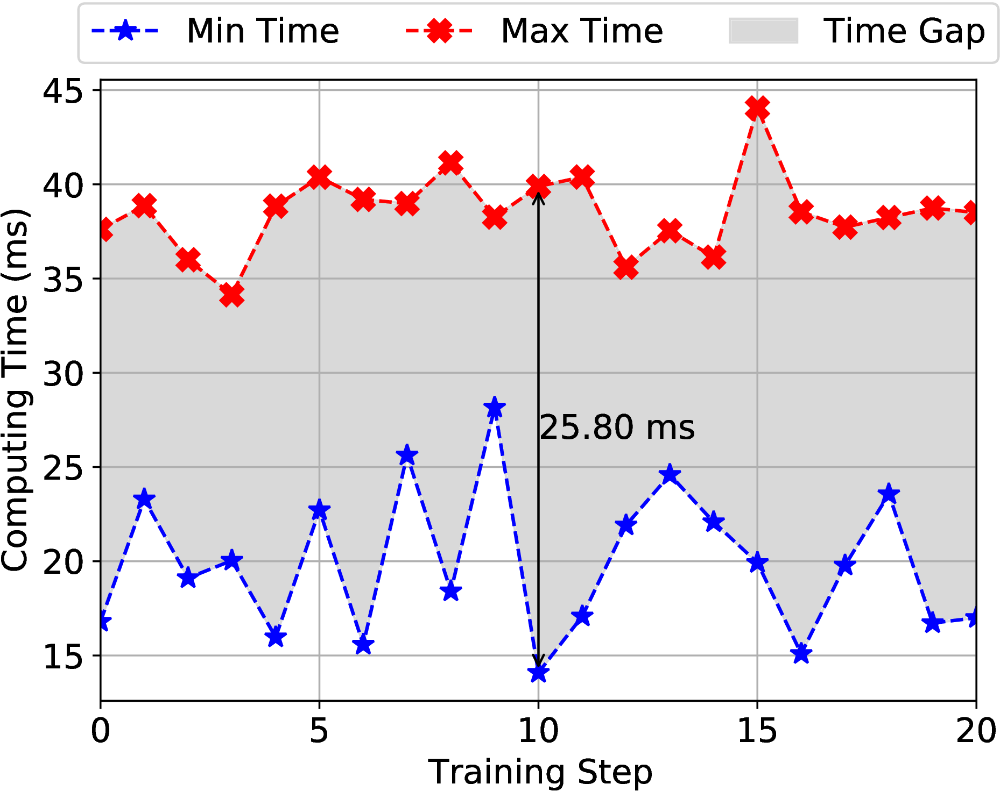
图 9: 计算负载不均衡的可视化展示. 我们在 8 个 GPU 上训练 MTGRBoost 模型, 并统计了第 0 至 20 个训练步骤中 GPU 计算时间的最大值与最小值. 阴影区域表示 GPU 处于空闲状态的时间段.
初始设计. FlashAttention 通过将序列分割成块来处理数据, 每个块独立计算局部注意力. 最终结果通过迭代合并以覆盖完整序列. 这种基于分块的设计天然支持变长序列, 这启发了我们最初采用闪存注意力直接计算完整用户序列的方法. 随后, 我们随机采样固定数量的序列组成训练批次, 并将其分配到不同设备上. 然而, 这种简单的批处理方式导致了显著的效率挑战. 图 9 展示了每个训练步骤中 GPU 计算时间的波动范围. 图中的阴影区域揭示了设备间存在较长的同步延迟 (最高达 25.8 毫秒), 导致资源利用率不足和训练效率降低. 其主要原因在于序列长度分布不均: 在单个训练步骤中, 不同设备处理的令牌数量差异高达 40,000 个. 为缓解此问题, 我们提出了一种新颖的动态序列批处理方法, 以实现跨设备计算负载的均衡.
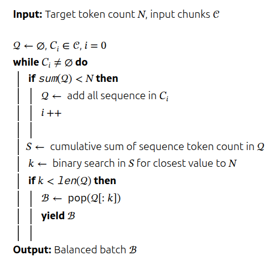
算法 1: 动态序列批处理
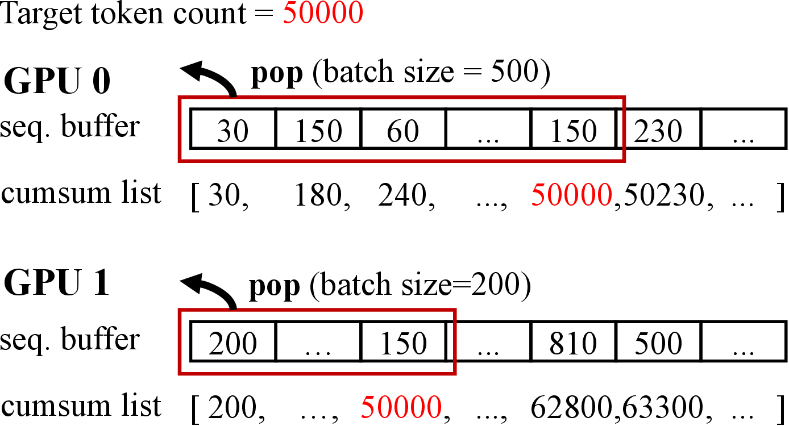
图 10: 动态序列批处理的运行示例. 数字表示样本中的令牌数量.
动态序列批处理 算法 1 展示了 MTGRBoost 的动态序列批处理机制, 其中每个 GPU 维护一个缓冲区, 用于存储从 Hive 表分块 中检索的序列样本. 我们将目标令牌数量 定义为平均序列长度 (即 600) 与批处理大小的乘积. 系统首先计算序列缓冲区中每个样本的令牌数量, 并计算累积和. 随后通过二分查找算法确定最优分割点, 使得累积和最接近目标令牌数量. 最终通过输出缓冲区中的前 个序列, 获得平衡的批次. 当缓冲区总令牌数低于目标值时, 剩余样本将合并至后续缓冲区. 该过程持续迭代, 直至所有 Hive 表分块样本处理完毕.
在数据并行中, 梯度通常通过 All-Reduce 操作进行平均计算. 然而, 在动态序列批处理场景下, 直接对梯度求平均可能引入偏差, 因为每个设备基于不同数量的样本计算梯度. 为解决这一问题, 我们采用 All-to-all 通信机制同步各设备间的批次大小, 随后根据各设备对应的批次大小对梯度进行加权平均. 这一机制确保了损失计算与梯度更新过程中的数值正确性.
讨论. 我们观察到动态序列批处理在分布式训练系统中具有两大关键优势. 首先, 通过限制令牌数量实现设备负载均衡. 其次, 通过动态批次大小优化硬件利用率. 如图 10 所示, GPU 0 需要 500 个批次达到阈值, 而 GPU 1 仅需 200 个批次即可实现. 固定尺寸策略需要保守的批次大小配置, 以防止因极端长序列集群导致内存溢出风险. 相比之下, 动态批处理通过将批次加载至接近设备内存上限, 最大化设备内存利用率. 虽然存在更复杂的负载均衡方法, 包括基于长度分布的序列打包技术或基于动态规划的并行策略, 我们最终未将这些方法纳入 MTGRBoost 系统. 这一选择源于实证观察: 在当前训练条件下, 我们轻量级的动态序列平衡机制已实现近乎最优的工作负载均衡, 使得引入额外复杂性变得不必要.
#5.2. 实现
检查点恢复. 检查点的核心目标是在训练过程中实现模型的持久化保存, 从而能够快速恢复到之前的训练状态. MTGRBoost 不仅支持传统的检查点恢复, 还能够在动态分布式环境中实现保存与加载 (例如在 8 个 GPU 上保存, 在 16 个 GPU 上加载). 现有系统通过将所有设备的模型参数保存在单一检查点中, 然后在加载时根据新设备数量重新分配参数来解决这一挑战. 然而, 这种方法存在一个关键缺陷: 每个设备都必须扫描整个检查点, 导致冗余的读取操作. 相比之下, MTGRBoost 采用了一种新颖的方法, 即每个设备独立保存自己的检查点. 在加载过程中, 新设备通过模运算定位所需的检查点文件. 例如, 当将 8 个 GPU 上保存的检查点加载到 16 个 GPU 上时, GPU 0 和 GPU 8 都会从原始 GPU 0 保存的检查点加载参数. 这一设计基于一个洞察: 分布式集群的扩缩容通常遵循 2 的幂次规律.
混合精度训练. 在训练过程中, 我们通过将稠密模型精度从 FP32 转换为 FP16 来降低计算资源消耗. 对于稀疏嵌入层, 我们根据访问频率动态划分热点特征集. 具体而言, 对于高频访问的特征嵌入, 我们保留 FP32 格式的嵌入向量, 以避免频繁梯度更新导致的量化累积误差. 相反, 低频特征采用 FP16 格式存储与计算, 在显著降低内存占用的同时加速查表操作.
梯度累积. MTGRBoost 通过跨多个训练批次累积梯度来增强训练稳定性, 以缓解小批量大小导致的大梯度方差. 对于稀疏嵌入参数, 我们首先记录每个批次内激活的嵌入 ID 及其对应的梯度值. 这些来自多个批次中相同 ID 的梯度被累积, 然后集体更新. 此外, 我们避免对稀疏嵌入进行全参数更新, 而是选择性地仅更新激活部分. 这种设计同时减少了内存浪费并提高了更新效率. 对于较小的稠密模型, 我们也实施梯度累积, 然后进行全参数更新.
算子融合. 受 Flash Attention 启发, 我们为前向计算中的关键 HSTU 模块实现了定制化算子融合. 具体而言, 我们将图 3 中的 U、Q、K、V 矩阵划分为多个分块, 在 SRAM 中按序处理. 关键创新在于引入因果掩码向量, 通过动态判定词元跳转机制, 有效减少冗余计算量.
表 1: GRM 中的模型超参数. 复杂度表示计算复杂度, 单位为 FLOPs.
| Complexity | # Emb. dim. | # HSTU block | # HSTU head | |
|---|---|---|---|---|
| Small | 4G | 512 | 3 | 2 |
| Large | 110G | 1024 | 22 | 4 |
#6. 实验评估
#6.1. 实验设置
模型设置. 对于 GRM 的稠密模型, 我们基于计算复杂度扩展模型架构, 得到 GRM 4G 和 GRM 110G 两种变体, 其中 “G” 对应每次前向传播所需的十亿次浮点运算 (GFLOPs). 对于稀疏模型, 我们使用嵌入维度因子扩展嵌入表, 包括 1D、8D 和 64D 配置. 基准 1D 配置选择广泛采用的嵌入维度, 通常在 32 到 128 之间 (不同特征存在差异). 相应地, 64D 表示所有嵌入表维度相对于此 1D 基准的 64 倍扩展. 在时间分解、查找去重、动态表和可扩展性等实验中, 由于这些实验对嵌入维度敏感, 我们调整了嵌入维度因子, 并在其他实验中保持默认值 1. 详细的模型超参数见表 1.
基线对比. 我们将 MTGRBoost 与 Meta 提出的最先进 GRM 训练框架 TorchRec进行对比. 实际上, 我们的初始设计正是基于 TorchRec 开发的, 并在此基础上通过所提出的优化方案实现了 MTGRBoost. 我们针对模型精度与训练效率两方面与 TorchRec 进行了实验对比. 在消融实验中, 我们深入探究了 MTGRBoost 各项设计模块的实际效果. 由于 TorchRec 是当前唯一专门针对 PyTorch 框架 GRM 进行优化的原生训练框架, 本次研究未纳入其他基线系统. 尽管 TensorFlow 等其他训练系统在工业界应用广泛, 但其现有框架尚无法支持 GRM 训练任务.
数据集与实现. 我们在美团 90 天的用户日志数据上进行实验, 每日日志数据量超过 4 亿条序列, 平均序列长度为 600, 最大长度可达 3000. 所有模型均使用相同数据从头开始训练. 为优化稀疏特征与稠密特征, 我们采用 Adam优化器.
环境. 我们的实验默认在配备 8 个 GPU 的训练节点上进行. 对于扩展性实验, 集群配置最多可扩展至 16 个 GPU 节点, 每个节点包含 8 个 GPU. 所有 GPU 均为 NVIDIA A100 SXM4 型号, 内存为 80GB. 节点内的 GPU 通过带宽为 600 GB/s 的 NVLink 互连, 而节点之间则使用带宽为 200 GB/s 的 Infini-Band 互连.
评估指标. 我们采用分组 AUC (Group AUC) 来评估模型在点击率 (CTR) 和点击转化率 (CTCVR) 任务上的准确性, 并通过系统吞吐量来评估训练效率. 与传统的全局 AUC 相比, GAUC 通过在用户级别进行分组计算 AUC 指标, 能更准确地反映推荐模型的实际性能.
#6.2. 与基线方法的比较
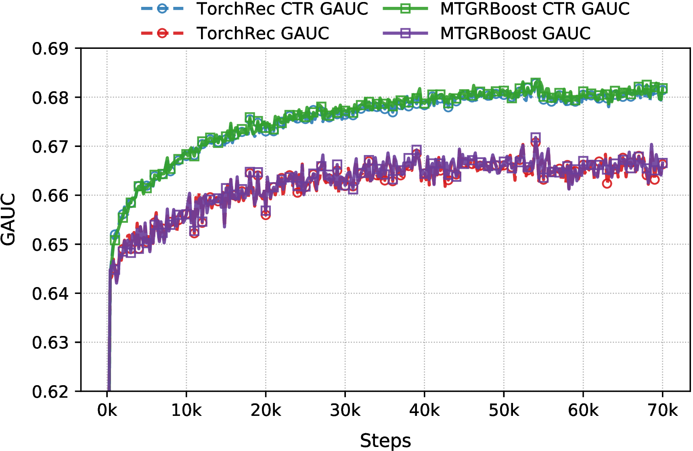
图 11: TorchRec 与 MTGRBoost 在 GRM 4G 1D 模型上分别针对 CTR 和 CTCVR 的 GAUC 结果对比.
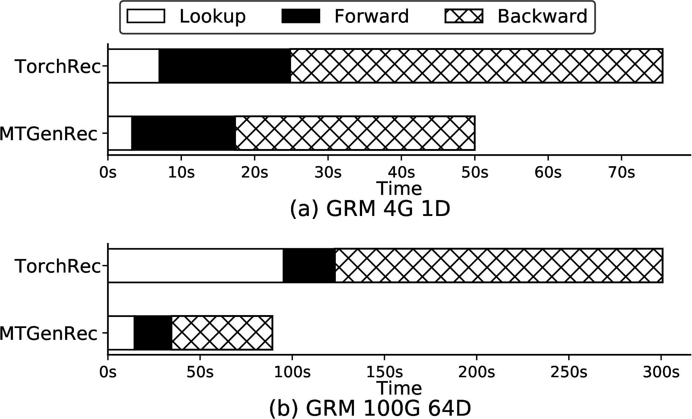
图 12: TorchRec 与 MTGRBoost 中 GRM 4G 1D 和 GRM 100G 64D 的时间分解对比.
准确性. 图 11 展示了使用 MTGRBoost 和 TorchRec 训练生成式推荐模型所获得的 CTR 与 CTCVR 的 GAUC 结果. 两个系统中的 GRM 模型在前 40,000 次训练步数中均呈现 GAUC 的快速增长, 随后在接下来 30,000 步中逐渐提升并最终趋于稳定. 这一进展表明, MTGRBoost 与 TorchRec 均能确保模型正确性与训练稳定性.
时间分解分析. 图 12 展示了 GRM 4G 1D 与 GRM 50G 64D 模型在累计 100 个训练步骤中的时间分解结果, 详细呈现了嵌入查找、前向传播与反向传播各阶段的执行耗时. 对比 TorchRec 基准, MTGRBoost 在所有阶段均实现了更短的执行时间. 随着模型复杂度的提升, 通过序列平衡优化在稠密模型计算中获得的效率改进愈发显著. 值得注意的是, 嵌入表维度的扩增会显著增加查找与反向传播阶段耗时, 这主要源于嵌入通信开销与稀疏参数更新的延迟. 然而, 我们通过自动表合并与查找去重技术的实施, 在这些关键阶段大幅提升了执行效率.
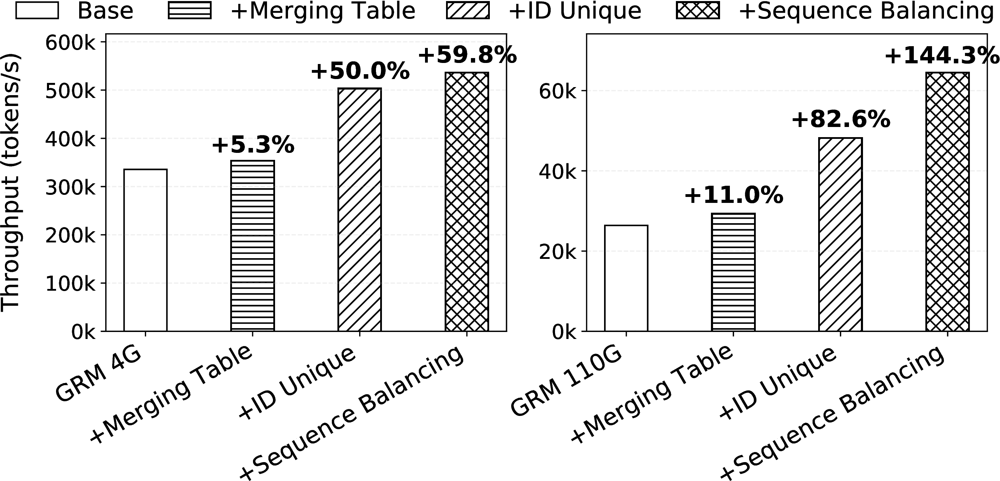
图 13: MTGRBoost 中 GRM 4G 1D 与 GRM 110G 1D 的消融研究. 相较于基线, MTGRBoost 实现了 1.60× 至 2.44× 的吞吐量提升.
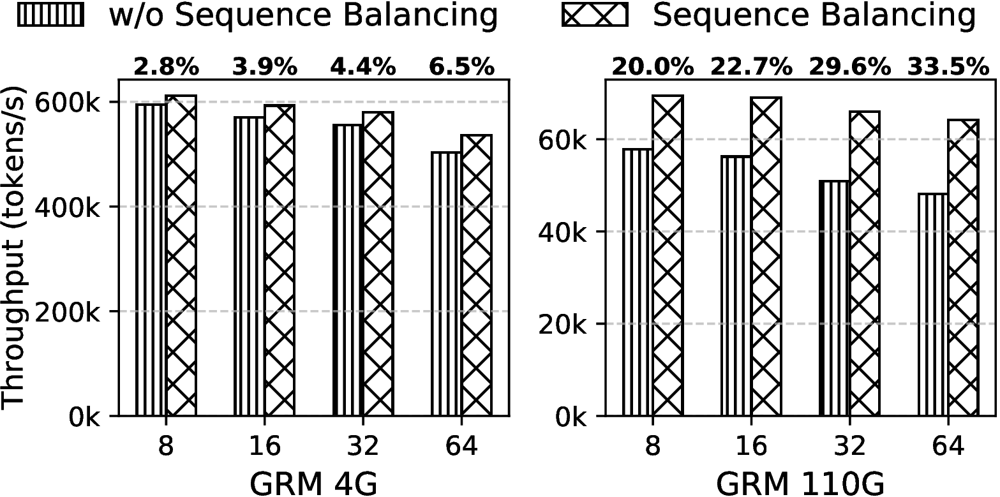
图 14: GRM 4G 1D 与 110G 1D 模型在禁用与启用序列平衡功能时的吞吐量对比. 我们将系统规模从 8 个 GPU 逐步扩展至 64 个 GPU, 图中顶部标注的数值为启用序列平衡带来的性能增益.
#6.3. 个体设计评估
消融研究. 图 13 展示了在 4G 和 10G 复杂度设置下, 通过逐步整合 MTGRBoost 中不同技术进行的消融研究. 从合并表格开始, 我们将多个特征表中的 ID 通信、嵌入通信和查找操作整合为单一操作. 随后, 在嵌入查找前对特征 ID 应用两阶段去重处理. 最后, 我们引入序列平衡策略以优化设备负载分布, 从而激活 MTGRBoost 的所有组件.
实验结果表明, 所有设计方案均带来了一致性提升, 这证明 MTGRBoost 中的每个组件对于提升整体系统效率都至关重要. 此外, 我们注意到随着计算复杂度增加, 性能增益呈现增强趋势. 这一现象揭示出 MTGRBoost 的效率提升与计算复杂度之间存在正相关关系.
表 2: 序列平衡功能禁用与启用状态下三种模型的批次大小及平均 GPU 内存利用率. 箭头前数值表示禁用状态下的固定批次大小, 箭头后数值表示启用状态下经过 1,000 步计算的平均值. 括号内数字表示内存利用率的提升幅度.
| Model | Batch size | GPU memory utilization |
|---|---|---|
| GRM 4G 1D | 480 → 496 | 86.3% → 95.7% (+9.4) |
| GRM 110G 1D | 80 → 116 | 75.3% → 90.3% (+15.0) |

图 15: 原始序列与动态序列批处理对比. 每个方框表示 GRM 4G 1D 模型在单次训练步骤中, 跨 8 个 GPU 的总 token 数量的最小值和最大值.
序列平衡评估. 我们进一步评估了所提出的序列平衡方法. 实验采用 GRM 4G 与 110G 模型, 从 8 张 GPU 起步, 逐步倍增至 64 张 GPU. 为保障公平性, 在启用与禁用序列平衡两种条件下, 均通过调整批次大小使 GPU 内存利用率接近饱和. 表 2 记录了不同配置下的批次大小与平均 GPU 内存利用率, 图 14 则展示了启用与禁用序列平衡时的吞吐量对比, 由此得出五项关键观察结论.
在 MTGRBoost 中启用序列平衡功能, 所有模型变体和 GPU 配置均实现了显著的吞吐量提升. 具体而言, GRM 4G 和 110G 模型的平均吞吐量分别提升 4.4%和 26.5%, 其中 64 GPU 配置下的 GRM 110G 模型峰值提升达到 33.5%.
对于给定模型, 在序列均衡条件下吞吐量提升随 GPU 数量呈比例增长. 这是因为同步训练架构中每个计算步骤都受限于最慢设备的处理速度. 随着 GPU 数量的增加, 遇到长序列导致计算延迟的概率也随之上升.
吞吐量提升与计算复杂度呈正相关. 由于序列处理浮点运算量随令牌隐藏维度呈二次方增长, 更高的计算复杂度会加剧负载不均衡, 这使得序列平衡变得愈发关键.
图 15 展示了启用序列平衡后各 GPU 间令牌数量方差的降低, 该措施将每台设备的令牌数量稳定在约 76,000 个, 有效缓解了负载不均衡问题.
表 2 显示, 动态序列批处理能够通过动态调节批次大小, 最大化 GPU 内存利用率. 相比之下, 原始序列由于极端长度可能导致内存溢出错误, 需要采用更小的批次处理, 从而降低系统效率.
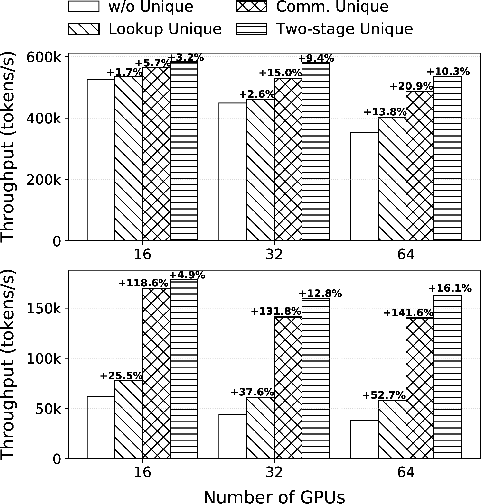
图 16: GRM 4G 1D (上图) 与 GRM 4G 64D (下图) 两阶段 ID 去重吞吐量对比. 柱状图上方标注了当前策略相较于先前策略的改进幅度.
两阶段 ID 去重效果分析. 为深入评估两阶段 ID 去重对系统效率的影响, 我们在固定计算复杂度为 4G FLOPs 的条件下, 采用 1D 和 64D 两种嵌入维度因子进行实验. 我们部署了四种去重策略: (a) 无去重, (b) 通信层去重 (仅第一阶段), (c) 查表层去重 (仅第二阶段), (d) 两阶段联合去重. 实验从 16 个 GPU 起步, 逐步增加 GPU 数量, 图 16 展示了相应的吞吐量结果. 我们得出以下观察结论.
首先, 两阶段方法相比基准方案 (a) 实现了 1.1× 至 3.7× 的吞吐量提升, 且 GPU 规模越大增益越显著. 这一发现凸显了两阶段去重机制在降低 ID 通信、嵌入向量通信及查找延迟方面的有效性. 其次, 在单阶段策略中, “通信去重” 优于 “查找去重”. 由于嵌入向量通信是主要延迟来源, 而哈希表查找本身具有高速特性. 最后, 去重效益与嵌入维度呈正相关: 高维嵌入在跨节点传输时会放大网络带宽需求, 这使得 ID 去重对降低通信量更为关键.
表 3: MCH 与 MTGRBoost 的吞吐量对比. OOM 表示内存不足, Gain 表示吞吐量提升. “-” 表示因 OOM 问题无法进行对比.
| Complexity | Dim. Factor | MCH | MTGRBoost | Gain |
|---|---|---|---|---|
| 4G | 1D | 392,731 | 579,649 | 47.59% |
| 4G | 8D | 260,590 | 438,190 | 68.2% |
| 4G | 64D | 80,857 | 155,832 | 92.7% |
| 110G | 1D | 44,719 | 68,993 | 54.28% |
| 110G | 8D | 28,329 | 55,929 | 97.4% |
| 110G | 64D | OOM | 38,575 | - |
动态嵌入表的效果. 为评估所提出的动态嵌入表在处理动态 ID 方面的有效性, 我们以托管碰撞处理 (MCH) 为基线进行了对比实验. MCH 由 TorchRec 设计, 通过维护固定大小的映射表将原始 ID 重新映射到连续空间, 以解决可变特征 ID 问题. 该方法采用二分搜索实现高效 ID 定位, 并在达到阈值时启动淘汰机制以更新 ID 映射关系.
实验结果如表 3 所示. 在固定计算复杂度的模型条件下, 我们通过调整嵌入维度因子评估了两种技术处理不同规模嵌入表的吞吐性能. 研究发现, 动态嵌入表相比 MCH 实现了 1.47×至 2.22×的吞吐量提升. 这一改进源于分组并行探测技术, 该技术通过多线程并行探测加速了哈希冲突的解决. 此外, 由于需要为所有表预分配内存, MCH 在较大嵌入维度下会出现内存溢出问题. 相比之下, 哈希表所需的初始内存显著减少, 仅在超过阈值时才分配额外资源.
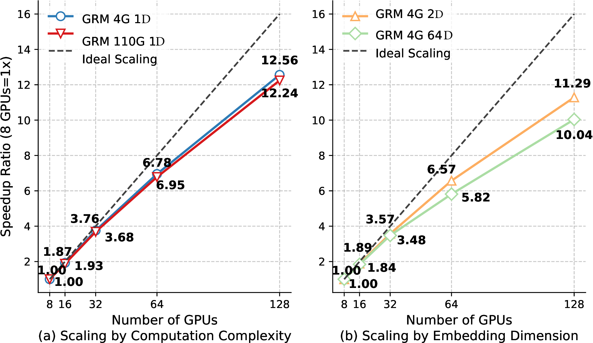
图 17: 通过(a)计算复杂度和(b)嵌入维度对比可扩展性. 我们以 1 节点、8 GPU 配置作为加速比的基准, 具体加速比值标注于折线附近.
#6.4. 可扩展性
我们通过考察实际加速比与理想线性扩展之间的偏差来评估系统的可扩展性. 评估涉及两个因素: 计算复杂度和嵌入维度. (1) 在嵌入维度固定为 1D 的情况下, 我们比较了计算复杂度分别为 4G 和 110G 时的加速比. (2) 在计算复杂度固定为 4G 的情况下, 我们比较了嵌入维度为 2D 和 64D 时的加速比. 我们以 1 个节点、8 个 GPU 的配置作为基准, 逐步扩展到 16 个节点 (总计 128 个 GPU). 图 17 中的实验结果揭示了三个关键发现.
首先, 所有系统在 GPU 数量增加时均呈现亚线性扩展, 这归因于并行化引入的通信开销. 然而, MTGRBoost 在 128 个 GPU 上达到了理想加速比的 62.75%–78.5%, 这证明了其强大的可扩展性. 其次, 将计算复杂度提升 27.5 倍 (GRM 4G 1D 对比 110G 1D) 及嵌入维度提升 32 倍 (GRM 4G 2D 对比 4G 64D) 仅导致加速比轻微下降. 这种稳定性源于序列均衡机制缓解了复杂度增加下的负载不均问题, 而合并表与两阶段 ID 去重操作则降低了查找与通信延迟. 第三, 嵌入维度对加速比的影响比计算复杂度更为显著. 由于推荐系统的延迟主要由稀疏嵌入的通信、计算与更新主导, 扩大嵌入维度更容易对性能产生影响.
#7. 相关工作
深度推荐模型 (DRM) 训练系统. 深度推荐模型 (DRM) 通过结合稀疏嵌入与稠密神经网络, 对每个用户-物品进行独立建模. 随着 DRM 的广泛应用, 众多系统被开发以加速其训练过程. 具体而言, Persia将稀疏嵌入计算与稠密模型处理解耦, 通过异步训练嵌入提升吞吐量, 同时同步训练稠密模型以保证精度. PICASSO利用模型架构与数据分布的模式, 通过打包、交错和缓存优化加速执行. XDL将 GPU 间的成对通信压缩为树状结构, 以加速嵌入查找与更新. ScaleFreeCTR利用主机内存存储海量嵌入表, 并采用 GPU 优化的同步机制更新嵌入. Zion与 RecSpeed通过部署额外网卡缓解嵌入通信的 I/O 瓶颈. HugeCTR针对 NVIDIA DGX-1/DGX-2 平台定制 DRM 训练, 通过优化 NV-Switch 互连上的嵌入通信实现加速. 这些系统通常根据对稀疏嵌入访问模式的特定假设 (例如, 偏向热门嵌入) 进行设计. 我们计划在仔细分析美团数据中的嵌入访问模式后, 整合其优化方案. 此外, 它们基于 TensorFlow 的实现需要大量工作才能迁移到 PyTorch 环境中.
Transformer 的高效训练系统. 为高效训练 Transformer, 研究重点在于注意力计算与并行策略. FlashAttention通过分块计算与在线重计算融合, 减少了对低速 GPU 全局内存的访问. FlexFlow与 OptCNN通过以不同方式在 GPU 间分配模型计算与参数, 自动搜索模型训练的最优并行策略. GPipe采用流水线并行, 将每个小批次拆分为微批次, 实现跨微批次的计算与通信交错执行. Megatron-LM与 DeepSpeed提出通过跨 GPU 划分模型与数据的混合并行策略, 以支持大规模模型训练. Hydraulis根据序列长度分布为每次迭代动态调整并行策略, 实现工作负载均衡. MTGRBoost 充分利用现有注意力内核优化实现高效计算, 但由于生成式推荐模型的稠密模型通常较小, 仅需简单的数据并行即可满足需求. 此外, MTGRBoost 还优化了稀疏嵌入的处理, 而大多数基于 Transformer 的模型并不具备这一特性.
#8. 结论
本文提出 MTGRBoost, 一个针对工业级生成式推荐模型 (GRM) 可扩展性与效率挑战的分布式训练系统. 针对稀疏模型, 我们引入动态嵌入表以处理可变特征 ID, 通过自动表合并与两阶段 ID 去重实现嵌入优化. 对于稠密模型, 动态序列平衡机制缓解了工作负载不均衡问题. 系统还集成了一系列技术以确保可用性. 实验结果表明, 在保持模型精度的同时, 训练效率获得显著提升. MTGRBoost 为工业应用提供了灵活高效的解决方案, 为生成式推荐模型在推荐系统中的更广泛应用铺平了道路.